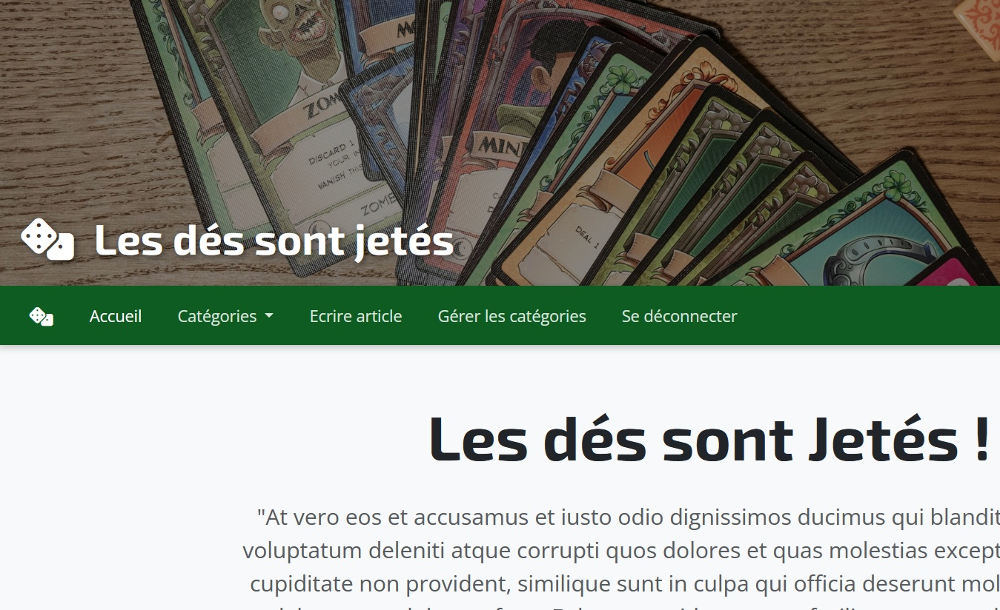

Hier
2023 — La bascule
Titre Professionnel Développeur Web et Web Mobile obtenu à Arinfo. Première immersion dans le code et confirmation de la voie.


35 ans · Lyon · BUT2 Informatique
Une reconversion menée étape par étape — de l'accompagnement éducatif au développement.
Titre Professionnel Développeur Web et Web Mobile obtenu à Arinfo. Première immersion dans le code et confirmation de la voie.
Je consolide ma culture informatique et je code au quotidien avec :
Recherche d'un stage de fin d'année et idéalement d'une alternance à la rentrée. A la rentrée : Spring Boot et Angular.
Orientation développement d'applications, IUT Lyon 1.
Développeur Web et Web Mobile, Arinfo (Nantes).
Aide aux devoirs, soutien scolaire, coaching d'adolescents et poste d'AESH.
Licence (Lyon II) puis Master Didactique des langues et FLE (Savoie Mont-Blanc).


Vous y êtes !

Réalisation en groupe d'une application de génération et consultation de factures avec authentification utilisateur/admin. Partie prise en charge (entre autres) : controllers des relevés, des factures.
Voir le code

Un blog fonctionnel (avec gestion d'articles, de commentaires et de catégories)
Voir le code

BUT informatique - travaux de groupe : station météo avec Raspberry Pi (Python/Flask); app web de ticketing (PHP)
DWWM : intégration de maquettes,
réalisations de sites vitrines, de
sites fonctionnels en PHP (PDO) et en Symfony. Vous pouvez les
trouver sur
mon GitHub :
Y
aller
Soif d'apprendre et d'aller plus loin.
J'ai travaillé en équipe à de nombreuses occasions et y ai développé des compétences de communication et d'organisation.
Je suis méticuleuse et fais attention aux détails subtils.
Je sais chercher par mes propres moyens.
L'autonomie oui, mais pas aux dépens de l'entraide au sein d'une équipe.
Une facilité à m'adapter aux environnements, aux outils et aux besoins d'un projet.